Fonte: gare di altri paesi/India/chimica/NSEC_2025_Question.pdf · Apri PDF · apri PDF p.1
Cluster: Meccanica
Soluzioni (stessa cartella): · · · · · · · · · · · · · ·
Problema 1
Among Ca, V, Cr and Mn, the second Ionization Energy is the highest for
(A) V (B) Ca (C) Cr (D) Mn
Topic: Modern-Quantum Physics Metodi: Bohr Model & Quantization Competenze: Physical Reasoning Fonte: Testo (PDF) — p.3
Problema 2
Among the given compounds, the permanent dipole moment is exhibited by
(A) (B) (C) (D)
Topic: Electrostatics Metodi: Symmetry Argument Competenze: Physical Reasoning Fonte: Testo (PDF) — p.3
Problema 3
Choose the correct statement
(A) and have tetrahedral geometry with no lone pairs (B) is trigonal planar with two oxygen atoms in the trigonal plane (C) has square planar geometry with no lone pair of electrons (D) is distorted tetrahedral and is square planar
Topic: Modern-Quantum Physics Metodi: Symmetry Argument Competenze: Physical Reasoning Fonte: Testo (PDF) — p.3
Problema 4
is used in etching of liquid crystal displays whereas is present in vegetables like spinach which causes itching to throat. Consider the following statements for these compounds
(i) is a stronger acid than (ii) is a weaker acid than (iii) is reducing agent and is oxidizing agent (iv) The conjugate base of is stronger than the conjugate base of
The correct statements are
(A) (i) and (iii) (B) (ii) and (iii) (C) (ii) and (iv) (D) (i) and (iv)
Topic: Thermodynamics Metodi: Physical Modeling Competenze: Physical Reasoning Fonte: Testo (PDF) — p.3
Problema 5
Compounds A, B, C and D are solid trihalides, all containing the same central atom. Compounds A, B, C are pale lilac (pale purple) in colour but compound D is dark green. Compound A is insoluble in water and alcohol but rest of the three are soluble in both the solvents.
The correct statement indicating the central atom and halides present in each of the compounds is
(A) Central atom is As, halides are , , , respectively (B) Central atom is Co, halides are , , , respectively (C) Central atom is Cr, halides are , , , respectively (D) Central atom is Nd, halides are , , , respectively
Topic: Modern-Quantum Physics Metodi: Physical Modeling Competenze: Physical Reasoning Fonte: Testo (PDF) — p.3
Problema 6
You are given a set of oxides: SrO, and . All the three show different reactions with water. Two of these oxides react with water whereas the third one is insoluble in water at room temperature (). The statement that is correct about these oxides is
(A) is insoluble in water, SrO gives a basic solution and gives an acidic solution in water. (B) is insoluble in water, SrO gives an acidic solution and gives a basic solution in water. (C) is insoluble in water, SrO gives a basic solution and gives an acidic solution in water. (D) is insoluble in water, gives a basic solution and SrO gives an acidic solution in water.
Topic: Thermodynamics Metodi: Physical Modeling Competenze: Physical Reasoning Fonte: Testo (PDF) — p.3
Problema 7
The complex that shows maximum number of isomers is (where gly = glycine, = triethylphosphine)
(A) (B) (C) (D)
Topic: Modern-Quantum Physics Metodi: Symmetry Argument Competenze: Physical Reasoning Fonte: Testo (PDF) — p.3
Problema 8
The spin-only magnetic moment for should be
(A) 3.87 (B) 2.83 (C) 1.72 (D) 5.92
Topic: Magnetism, Modern-Quantum Physics Metodi: Physical Modeling Competenze: Mathematical Modeling Fonte: Testo (PDF) — p.4
Problema 9
The correct order of for the following given transition metal complexes is
(A) (B) (C) (D)
Topic: Modern-Quantum Physics Metodi: Physical Modeling Competenze: Physical Reasoning Fonte: Testo (PDF) — p.4
Problema 10
The correct rank of bond order for , , CO and is
(A) 3, 1.5, 3, 1 (B) 2, 5, 1, 1 (C) 1.5, 2.5, 3, 2 (D) 2.5, 1.5, 3, 1
Topic: Modern-Quantum Physics Metodi: Bohr Model & Quantization Competenze: Physical Reasoning Fonte: Testo (PDF) — p.4
Problema 11
The correct basicity order in water for the following is
(A) (B) (C) (D)
Topic: Thermodynamics Metodi: Physical Modeling Competenze: Physical Reasoning Fonte: Testo (PDF) — p.4
Problema 12
A 1.25 g Shelcal 500 tablet contains 1250 mg of . A student dissolved one tablet in water to make 1.0 L solution (X). 10.0 mL of solution (X) was titrated with 0.0198 M EDTA-MgEDTA mixture in the burette and found the content matched the label claim. (Molar mass of ).
The correct option is
(A) The burette reading is 6.31 mL and molarity of Shelcal solution is 0.125 M (B) The burette reading is 10.00 mL and molarity of Shelcal solution is 0.0125 M (C) The burette reading is 6.31 mL and molarity of Shelcal solution is 0.0125 M (D) The burette reading is 10.00 mL and molarity of Shelcal solution is 0.125 M
Topic: Order-of-Magnitude Estimation Metodi: Experimental Data Analysis Competenze: Mathematical Modeling, Significant Figures Fonte: Testo (PDF) — p.4
Problema 13
When 10 mL of 0.01 M HCl was added to a mixture of 0.5 M and 0.5 M , the pH of the resultant solution will be ( of is 4.75)
(A) 9.07 (B) 9.75 (C) 9.25 (D) 8.75
Topic: Thermodynamics Metodi: Approximation & Series Expansion, Physical Modeling Competenze: Mathematical Modeling Fonte: Testo (PDF) — p.4
Problema 14
The correct order of CO triple bond character in the given metal carbonyl complexes is
(A) (B) (C) (D)
Topic: Modern-Quantum Physics Metodi: Physical Modeling Competenze: Physical Reasoning Fonte: Testo (PDF) — p.4
Problema 15
Consider the following statements for the square planar complex . Identify the correct statements
I. It is thermodynamically more stable than II. It can exhibit stereoisomerism. III. It can exhibit structural isomerism. IV. It is not easily soluble in polar solvents.
The correct option is
(A) I, II, IV (B) II, III, IV (C) I, III, IV (D) I, II, III
Topic: Modern-Quantum Physics Metodi: Symmetry Argument, Physical Modeling Competenze: Physical Reasoning Fonte: Testo (PDF) — p.4
Problema 16
Which of the following molecules is odd one out in its bonding properties?
(A) (B) (C) (D)
Topic: Modern-Quantum Physics Metodi: Symmetry Argument Competenze: Physical Reasoning Fonte: Testo (PDF) — p.4
Problema 17
Which one of the following reactions will give a product that has zero net dipole moment?
(A) Hex-3-yne with -Pd/C (B) Hex-3-yne with Na in liquid ammonia (C) Hex-2-yne with -Pd/C (D) Hex-2-yne with Na in liquid ammonia
Topic: Electrostatics Metodi: Symmetry Argument Competenze: Physical Reasoning Fonte: Testo (PDF) — p.4
Problema 18
Which of the following statements is not correct regarding the aromatic electrophilic substitution reactions of aniline or its derivatives under standard laboratory conditions?
(A) Aniline, when subjected to bromination with , undergoes rapid tribromination to form 2,4,6-tribromoaniline as the major product. (B) During direct nitration of aniline with a nitrating mixture, meta-substitution is observed predominantly due to protonation of the amino group under acidic conditions. (C) The acetamido group (), being less basic than , shows stronger (mesomeric) effect and thus activates the ring more than the free amino group. (D) Acetylation of aniline reduces its reactivity towards electrophilic substitution and facilitates controlled monosubstitution at ortho and para positions.
Topic: Modern-Quantum Physics Metodi: Physical Modeling Competenze: Physical Reasoning Fonte: Testo (PDF) — p.5
Problema 19
The optically active mixtures from the following is:
(A) Two enantiomers of a compound (75%) + (25%) (B) Racemic mixture (50%) + (50%) (C) Two enantiomers of a compound (75%) + (25%) (D) Two enantiomers (75%) + (25%)
Topic: Modern-Quantum Physics Metodi: Symmetry Argument Competenze: Physical Reasoning Fonte: Testo (PDF) — p.5
Problema 20
Alkenes can be converted to cis-diols using and trans-diols via the epoxide followed by acid hydrolysis.
Compound C given below is formed from: (i) alkene A by treatment with (ii) the epoxide of alkene B followed by acid hydrolysis.
The structures of A and B are:
(A) A and B as specific alkene structures (B) A and B as specific alkene structures (C) A and B as specific alkene structures (D) A and B as specific alkene structures
Topic: Modern-Quantum Physics Metodi: Symmetry Argument Competenze: Physical Reasoning, Diagrammatic Reasoning Fonte: Testo (PDF) — p.5
Problema 21
The disaccharide shown below undergoes enzymatic hydrolysis. The monosaccharide units formed upon complete hydrolysis of the disaccharide are
(A) Glucose and Glucose (B) Glucose and Galactose (C) Galactose and Fructose (D) Galactose and Galactose
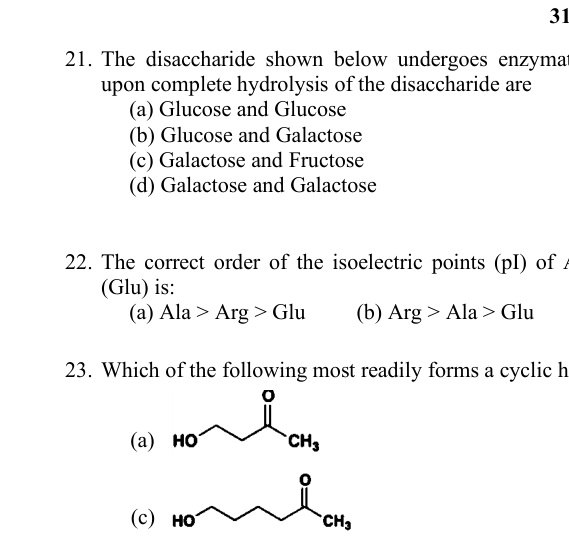
Disaccharide structure for hydrolysisTopic: Modern-Quantum Physics Metodi: Physical Modeling Competenze: Physical Reasoning Fonte: Testo (PDF) — p.6
Problema 22
The correct order of the isoelectric points (pI) of Alanine (Ala), Arginine (Arg), and Glutamic acid (Glu) is:
(A) Ala > Arg > Glu (B) Arg > Ala > Glu (C) Glu > Arg > Ala (D) Glu > Ala > Arg
Topic: Thermodynamics Metodi: Physical Modeling Competenze: Physical Reasoning Fonte: Testo (PDF) — p.6
Problema 23
Which of the following most readily forms a cyclic hemiacetal in the presence of an acid catalyst?
Topic: Modern-Quantum Physics Metodi: Symmetry Argument Competenze: Physical Reasoning, Diagrammatic Reasoning Fonte: Testo (PDF) — p.6
Problema 24
A medicinal chemist is exploring halogenated aromatic compounds as potential precursors for drug molecules. In one experiment, she attempts bromination of a substituted aromatic ring in the presence of acetic acid, a typical aromatic electrophilic substitution (AES) condition.
The chemist proposed an intermediate for the above reaction with the following resonance structures. Which of the following structures contributes the most to the stability of the intermediate?
(A) Structure A (B) Structure B (C) Structure C (D) Structure D
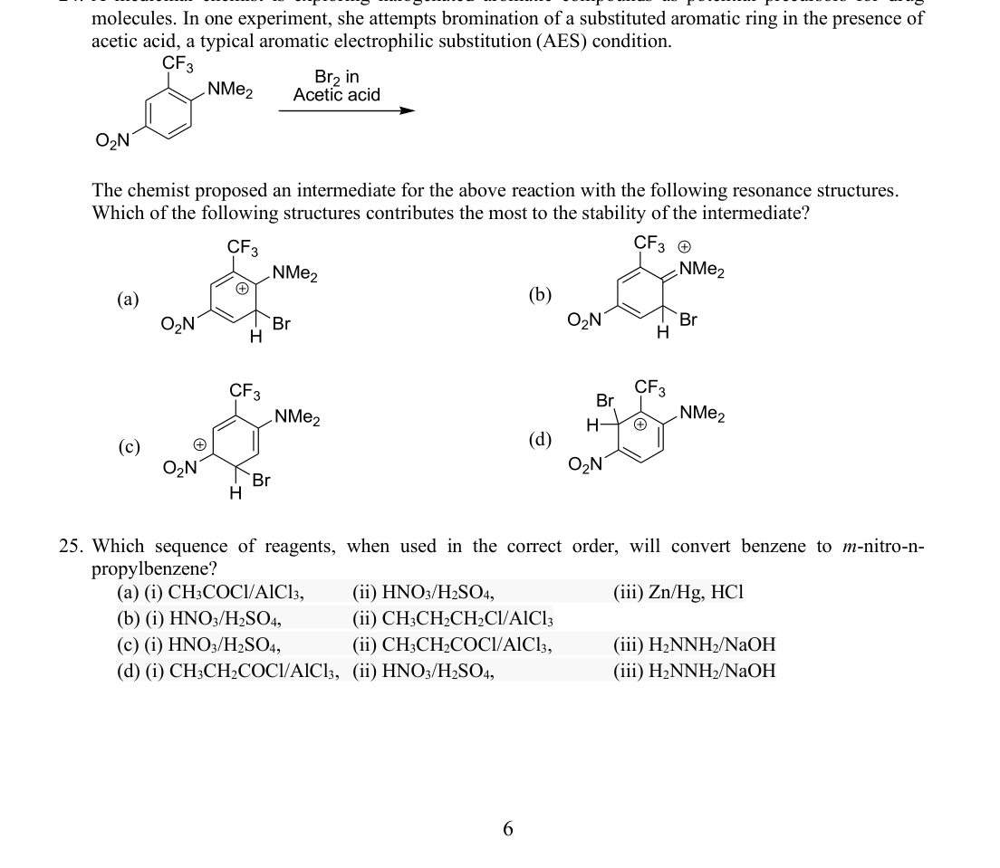
Resonance structures of bromination intermediateTopic: Modern-Quantum Physics, Electrostatics Metodi: Physical Modeling Competenze: Physical Reasoning, Diagrammatic Reasoning Fonte: Testo (PDF) — p.6
Problema 25
Which sequence of reagents, when used in the correct order, will convert benzene to m-nitro-n-propylbenzene?
(A) (i) , (ii) , (iii) (B) (i) , (ii) (C) (i) , (ii) , (iii) (D) (i) , (ii) , (iii)
Topic: Modern-Quantum Physics Metodi: Physical Modeling Competenze: Physical Reasoning Fonte: Testo (PDF) — p.6
Problema 26
Which of the following compounds predominantly gives the para-nitro product as the major isomer upon nitration using a nitrating mixture ()?
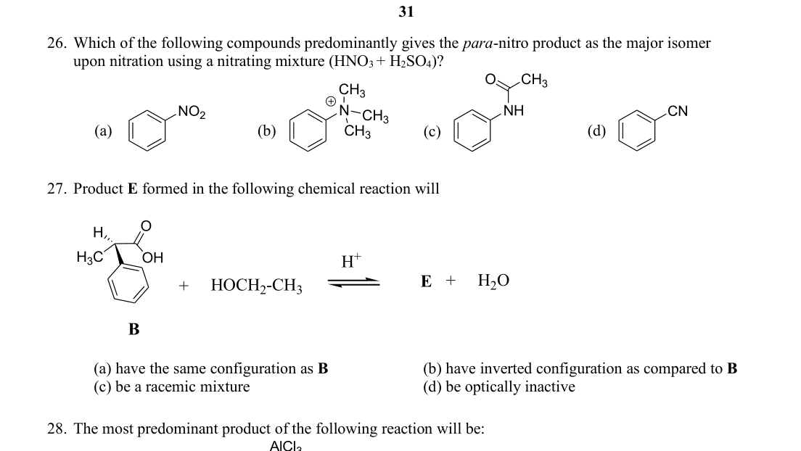
Aromatic compounds for nitration regioselectivityTopic: Modern-Quantum Physics Metodi: Symmetry Argument Competenze: Physical Reasoning, Diagrammatic Reasoning Fonte: Testo (PDF) — p.7
Problema 27
Product E formed in the following chemical reaction will
(A) have the same configuration as B (B) have inverted configuration as compared to B (C) be a racemic mixture (D) be optically inactive
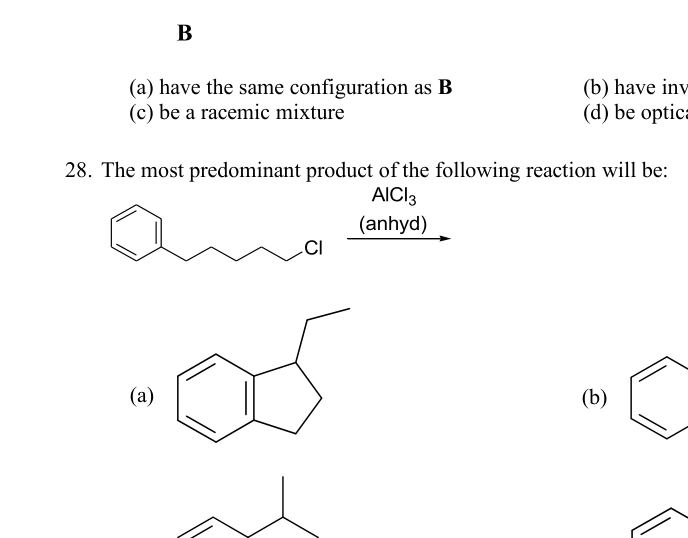
Reaction scheme showing compound B structureTopic: Modern-Quantum Physics Metodi: Symmetry Argument Competenze: Physical Reasoning Fonte: Testo (PDF) — p.7
Problema 28
The most predominant product of the following reaction will be:
(A) product (a) (B) product (b) (C) product (c) (D) product (d)
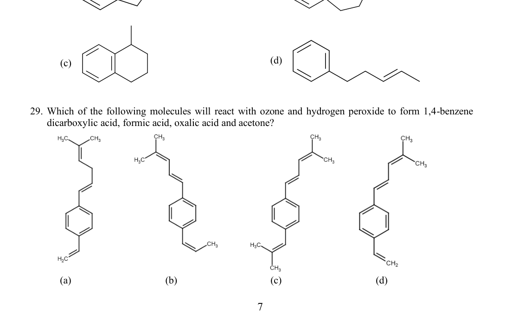
Friedel-Crafts reaction productsTopic: Modern-Quantum Physics Metodi: Symmetry Argument Competenze: Physical Reasoning, Diagrammatic Reasoning Fonte: Testo (PDF) — p.7
Problema 29
Which of the following molecules will react with ozone and hydrogen peroxide to form 1,4-benzene dicarboxylic acid, formic acid, oxalic acid and acetone?
(A) molecule (a) (B) molecule (b) (C) molecule (c) (D) molecule (d)
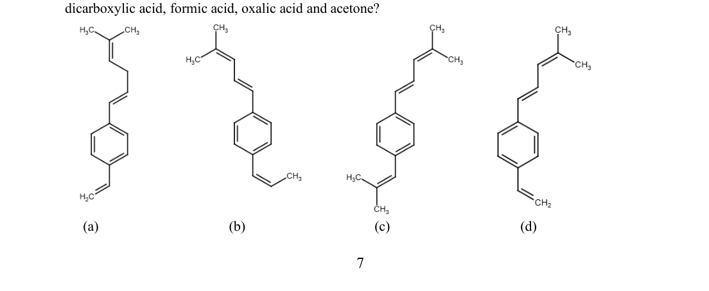
Candidate molecules for ozonolysis productsTopic: Modern-Quantum Physics Metodi: Physical Modeling Competenze: Physical Reasoning, Diagrammatic Reasoning Fonte: Testo (PDF) — p.7
Problema 30
The correct numerical answers for the following is:
(i) The number of NOT-aromatic compounds from the given set is ___ (ii) The number of -hydrogen atoms in the given structure is ___ (iii) The number of geometrical isomers possible in is ___ (iv) The number of compounds more acidic than from the given set is ___
(A) (i) = 3; (ii) = 6; (iii) = 2; (iv) = 3 (B) (i) = 2; (ii) = 6; (iii) = 2; (iv) = 3 (C) (i) = 2; (ii) = 7; (iii) = 4; (iv) = 2 (D) (i) = 3; (ii) = 7; (iii) = 2; (iv) = 3
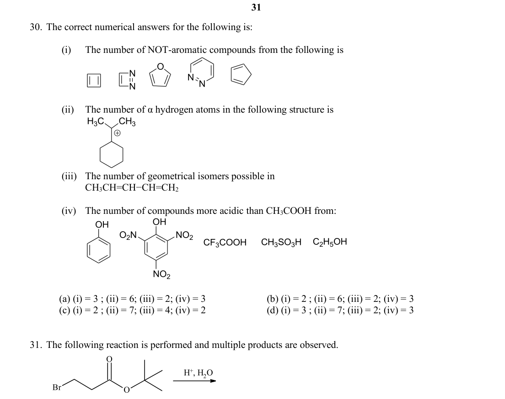
Sets of organic structures for counting problemsTopic: Modern-Quantum Physics Metodi: Physical Modeling, Symmetry Argument Competenze: Mathematical Modeling, Physical Reasoning Fonte: Testo (PDF) — p.8
Problema 31
The following reaction is performed and multiple products are observed.
One of the products (X) can decolourize water. The product (X) is
(A) product (a) with OH group (B) product (b) (C) product (c) (D) product (d)
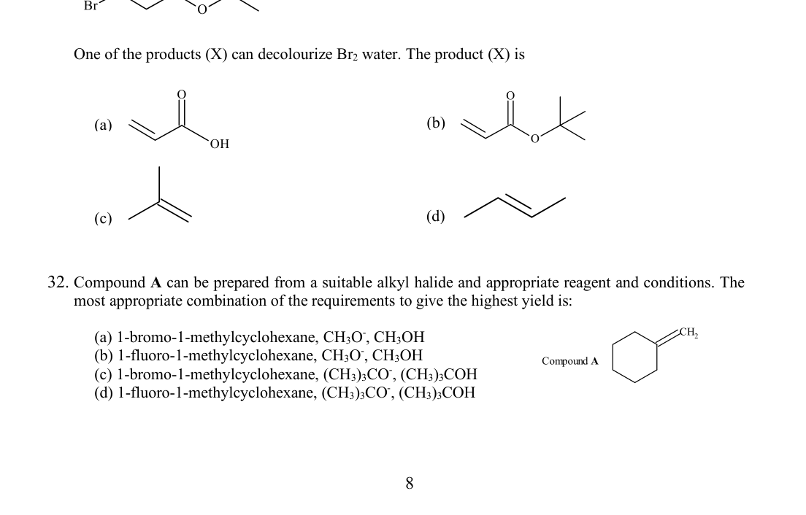
Hydration reaction product structuresTopic: Modern-Quantum Physics Metodi: Physical Modeling Competenze: Physical Reasoning, Diagrammatic Reasoning Fonte: Testo (PDF) — p.8
Problema 32
Compound A (1-methylcyclohexene) can be prepared from a suitable alkyl halide and appropriate reagent and conditions. The most appropriate combination of the requirements to give the highest yield is:
(A) 1-bromo-1-methylcyclohexane, , (B) 1-fluoro-1-methylcyclohexane, , (C) 1-bromo-1-methylcyclohexane, , (D) 1-fluoro-1-methylcyclohexane, ,
Topic: Modern-Quantum Physics Metodi: Physical Modeling Competenze: Physical Reasoning Fonte: Testo (PDF) — p.8
Problema 33
Consider three cylinders of capacity 2.24 L each fitted with piston. Each containing 2.50 g of an ideal gas (X, Y and Z) as specified below at 273 K. The pressure is not specified.
Given: Molar mass (in ) as X = 40, Y = 80 and Z = 20.
The correct set of statement(s) is/are
(i) The number of molecules in each cylinder is the same. (ii) The average velocity of the molecules in each cylinder is the same. (iii) The pressure of gas Z is the highest. (iv) If the pressure in each cylinder is adjusted to one atmosphere at constant temperature, the volume of the gas Z will increase and those of the other two will decrease.
(A) (i) and (ii) are correct (B) (i) and (iii) are correct (C) (ii) and (iv) are correct (D) (iii) and (iv) are correct
Topic: Kinetic Theory, Thermodynamics Metodi: Ideal Gas Law, Kinetic Theory of Gases Competenze: Mathematical Modeling, Physical Reasoning Fonte: Testo (PDF) — p.9
Problema 34
A sample (X) of was found to contain a small quantity of as an impurity, both of the compounds are soluble in water. In an experiment 30 g of the above sample (X) was dissolved in 60 mL of 0.4 M HCl to give solution (Y). 20 mL of 0.4 M NaOH was required to neutralise the excess HCl in solution (Y). The percentage of in sample (X) is:
Given: Molar mass of
(A) 1.7 (B) 3.5 (C) 0.17 (D) 0.35
Topic: Order-of-Magnitude Estimation Metodi: Experimental Data Analysis, Physical Modeling Competenze: Mathematical Modeling, Significant Figures Fonte: Testo (PDF) — p.9
Problema 35
Consider the following reactions (i) and (ii) occurring at 298 K, such that and the Arrhenius constant has the same value for both the reactions. The relation between and is
(A) (B) (C) (D)
Topic: Thermodynamics Metodi: Differential Equations, Approximation & Series Expansion Competenze: Mathematical Modeling Fonte: Testo (PDF) — p.9
Problema 36
In the spacecrafts of NASA, the oxygen required for the astronauts is obtained from the following chemical reaction.
The requirement of per astronaut per day is 500 L as measured at 1 atm and 300 K. The minimum mass of (Molar mass of ) needed for two astronauts to be in the spacecraft for ten days in a space mission is:
(A) 49.8 kg (B) 426 g (C) 213 g (D) 498.0 kg
Topic: Thermodynamics, Order-of-Magnitude Estimation Metodi: Ideal Gas Law, Physical Modeling Competenze: Mathematical Modeling, Unit Conversion Fonte: Testo (PDF) — p.9
Problema 37
When 15.0 g of steam at 373 K is passed in 250.0 g of (l) in closed container at 298 K at constant pressure of 1 bar, then the correct statement, if this is isolated system, will be:
(Assume that the final state is liquid water)
(A) Both the volume and entropy will increase. (B) Both the volume and entropy will decrease. (C) The volume will increase and the entropy will decrease. (D) The volume will decrease and the entropy will increase.
Topic: Thermodynamics Metodi: First Law of Thermodynamics, Physical Modeling Competenze: Physical Reasoning, Mathematical Modeling Fonte: Testo (PDF) — p.9
Problema 38
Consider the given equilibrium reaction at 473 K
The number of moles of present at equilibrium can be maximised by
| Temperature | Pressure | |
|---|---|---|
| (A) | increasing | increasing |
| (B) | increasing | decreasing |
| (C) | decreasing | increasing |
| (D) | decreasing | decreasing |
Topic: Thermodynamics Metodi: First Law of Thermodynamics, Thermodynamic Cycle Analysis Competenze: Physical Reasoning, Mathematical Modeling Fonte: Testo (PDF) — p.10
Problema 39
The following concentration vs time plot represents the conversion of to . Which of the following statements (I to IV) is/are true?
I. The reaction is of zero order II. Unit of rate constant of this reaction is III. Unit of rate constant of the reaction is IV. Unit of rate of the reaction is
(A) I only (B) I, II (C) III only (D) II, IV
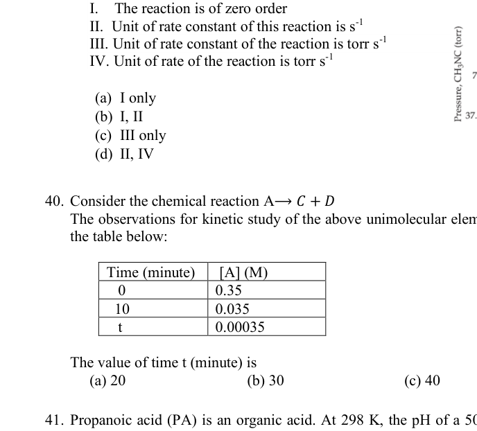
Concentration vs time plot for CH3NC isomerizationTopic: Thermodynamics Metodi: Experimental Data Analysis, Graph Linearization Competenze: Experimental Data Analysis, Graph Linearization Fonte: Testo (PDF) — p.10
Problema 40
Consider the chemical reaction
The observations for kinetic study of the above unimolecular elementary reaction at 298 K are given in the table below:
| Time (minute) | [A] (M) |
|---|---|
| 0 | 0.35 |
| 10 | 0.035 |
| 0.00035 |
The value of time (minute) is
(A) 20 (B) 30 (C) 40 (D) 35
Topic: Thermodynamics Metodi: Differential Equations, Experimental Data Analysis Competenze: Mathematical Modeling, Experimental Data Analysis Fonte: Testo (PDF) — p.10
Problema 41
Propanoic acid (PA) is an organic acid. At 298 K, the pH of a 50.0 mL sample of 0.20 M of it is 3.0. The pH of solution formed by mixing 25.0 mL 0.2 M sodium propanoate solution with 25.0 mL 0.1 M propanoic acid will be:
(A) 3.3 (B) 5.3 (C) 5.6 (D) 6.3
Topic: Thermodynamics Metodi: Approximation & Series Expansion, Physical Modeling Competenze: Mathematical Modeling Fonte: Testo (PDF) — p.10
Problema 42
M is an alkaline earth metal. 1.0 M solution of is added dropwise to a solution that is 0.01 M each in fluoride, sulfite, and phosphate ions. The order of precipitation of corresponding salts is
| Solid | |
|---|---|
(A) , , (B) , , (C) , , (D) , ,
Topic: Thermodynamics Metodi: Physical Modeling Competenze: Mathematical Modeling, Physical Reasoning Fonte: Testo (PDF) — p.10
Problema 43
can exist as an octahedral complex (P). 0.1 molal aqueous solution of this complex (P) shows a depression in freezing point of . The molecular formula of the complex (P) is:
(Given for water )
(Assuming 100% ionization of the complex)
(A) (B) (C) (D)
Topic: Thermodynamics Metodi: Physical Modeling, Ideal Gas Law Competenze: Mathematical Modeling Fonte: Testo (PDF) — p.11
Problema 44
Aspirin () is produced by the reaction between salicylic acid () and acetic anhydride () as per the reaction
In the reaction of 155 g salicylic acid and 105 g acetic anhydride, assuming 80% conversion of the limiting reactant, the mass of aspirin formed is:
Given molar mass in : salicylic acid = 138, acetic anhydride = 102 and aspirin = 180
(A) 148 g (B) 162 g (C) 202 g (D) 184 g
Topic: Order-of-Magnitude Estimation Metodi: Physical Modeling Competenze: Mathematical Modeling, Significant Figures Fonte: Testo (PDF) — p.11
Problema 45
A voltaic cell is constructed as shown below
, . The initial concentration of in the half-cell is 0.005 M and the corresponding cell voltage is at 298 K. Identify the correct option from the following
(A) Initial ; it will increase with time (B) Initial ; it will increase with time (C) Initial ; it will decrease with time (D) Initial ; it will decrease with time
Topic: Circuits, Electrostatics Metodi: Electric Potential Method, Physical Modeling Competenze: Mathematical Modeling, Physical Reasoning Fonte: Testo (PDF) — p.11
Problema 46
A certain quantity of a hydrocarbon fuel sample () is burnt in excess to ensure complete combustion. The combustion produced 11.93 g , 2.19 g , and 311 kJ of heat. Mass of the fuel burnt in this combustion is
(A) 3.493 g (B) 14.02 g (C) 11.93 g (D) 3.250 g
Topic: Thermodynamics, Conservation of Energy Metodi: Conservation of Energy, Physical Modeling Competenze: Mathematical Modeling, Significant Figures Fonte: Testo (PDF) — p.11
Problema 47
The photon with the longest wavelength required for the electronic transition in an atom of hydrogen is:
(A) (B) (C) (D)
Topic: Modern-Quantum Physics, Oscillations & Waves Metodi: Bohr Model & Quantization, Photon Energy Relation Competenze: Mathematical Modeling, Physical Reasoning Fonte: Testo (PDF) — p.11
Problema 48
Consider two reactions A and B for which the variation of with temperature is given in the plots below. If the enthalpy change for the reactions are and , respectively for A and B, the correct statement is:
(A) The equilibrium constant for Reaction B decreases as temperature increases. (B) The entropy change for Reaction A is 50 kJ/mol. (C) Reaction A remains spontaneous only at temperatures less than 500 K (D) At 400 K, reaction B changes from exothermic to endothermic reaction.
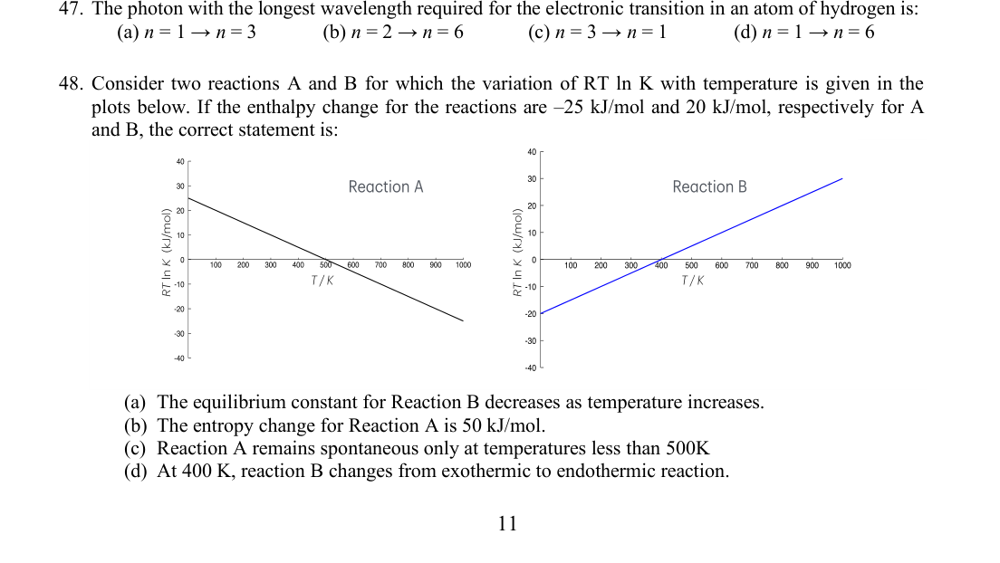
RT ln K vs temperature plots for reactions A and BTopic: Thermodynamics Metodi: Thermodynamic Cycle Analysis, Graph Linearization Competenze: Graph Linearization, Physical Reasoning Fonte: Testo (PDF) — p.11
Problema 49
Alkyl lithium compounds are of interest in organic synthesis as efficient alkylating agents. Consider the following two reactions
(i) (ii)
The CORRECT statement(s) for the above two reactions is/are:
(A) Reaction (i) will proceed because the more acidic hydrocarbon will react with the Li-derivative of less acidic hydrocarbon to liberate less acidic hydrocarbon. (B) Reaction (ii) will proceed because the less acidic hydrocarbon will react with the Li-derivative of more acidic hydrocarbon to liberate more acidic hydrocarbon. (C) Both the reactions will proceed because the more acidic hydrocarbon will react with the Li-derivative of more acidic hydrocarbon to liberate less acidic hydrocarbon. (D) Both the reactions proceed because the less acidic hydrocarbon will react with the Li-derivative of more acidic hydrocarbon to liberate less acidic hydrocarbon.
Topic: Thermodynamics Metodi: Physical Modeling Competenze: Physical Reasoning Fonte: Testo (PDF) — p.12
Problema 50
A mixture gave light yellow precipitate with silver nitrate which did not dissolve completely with ammonia solution. It gave positive chromyl chloride test. When organic layer test was performed with addition of excess of concentrated nitric acid, a violet coloured organic layer first formed which then changed to orange colour. Brown ring test was positive but brown coloured gas was not intensified on heating the mixture with copper turnings and concentrated sulphuric acid. Which of the anions were present?
(A) Chloride, bromide, iodide (B) Chloride, nitrate, iodide (C) Fluoride, nitrate, bromide (D) Chloride, iodide, nitrite
Topic: Modern-Quantum Physics Metodi: Experimental Data Analysis Competenze: Experimental Data Analysis, Physical Reasoning Fonte: Testo (PDF) — p.12
Problema 51
Consider the following half-cell reactions
Using above equations, the correct statement(s) is/are
(A) Oxidation of by is a spontaneous reaction. (B) Oxidation of by is a nonspontaneous reaction. (C) is a better oxidizing agent than . (D) will be able to oxidize .
Topic: Circuits, Electrostatics Metodi: Electric Potential Method, Physical Modeling Competenze: Mathematical Modeling, Physical Reasoning Fonte: Testo (PDF) — p.12
Problema 52
The suitable combinations of physico-chemical methods that can be used to assign the correct formula to the compound are
(A) Addition of ions (B) Electrical conductance of aqueous solution (C) Depression in freezing point (D) Thermal decomposition of the complex under controlled conditions
Topic: Thermodynamics, Modern-Quantum Physics Metodi: Experimental Data Analysis, Physical Modeling Competenze: Experimental Data Analysis, Physical Reasoning Fonte: Testo (PDF) — p.12
Problema 53
Given below is the structure of a compound X. Identify the correct statement(s) from below.
(A) Compound X has two vinylic protons, and two allylic protons. (B) Compound X (9.6 gram) will react with excess of bromine to give a dibromide (25.6 gram). (C) The carbon radical generated by cleavage of bond will be more stable than that generated by cleavage of bond. (D) Compound X on ozonolysis followed by treatment with will give a dial.
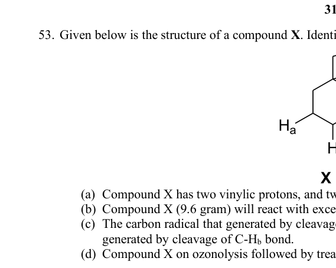
Structure of compound X with labeled protonsTopic: Modern-Quantum Physics Metodi: Physical Modeling Competenze: Physical Reasoning, Diagrammatic Reasoning Fonte: Testo (PDF) — p.13
Problema 54
Which of the following statement(s) is/are incorrect for sugars?
(A) If a disaccharide is dextrorotatory, it means both its monosaccharides will also be essentially dextrorotatory. (B) The designations (+) and (−) can also be referred to as D- and L- respectively (C) The predominant hemiacetal form of glucose is formed by bond formation between and (D) All nucleic acids contain 2-deoxy-D-ribose as the aldopentose
Topic: Modern-Quantum Physics Metodi: Physical Modeling Competenze: Physical Reasoning Fonte: Testo (PDF) — p.13
Problema 55
When the following reaction was performed, the product obtained gave a bright orange red precipitate with 2,4-dinitrophenylhydrazine and does not react with saturated solution of .
This implies:
(A) hydrolysis has taken place (B) intramolecular Friedel-Crafts reaction has been favoured (C) intermolecular Friedel-Crafts reaction has taken place (D) the product has a carbonyl functional group
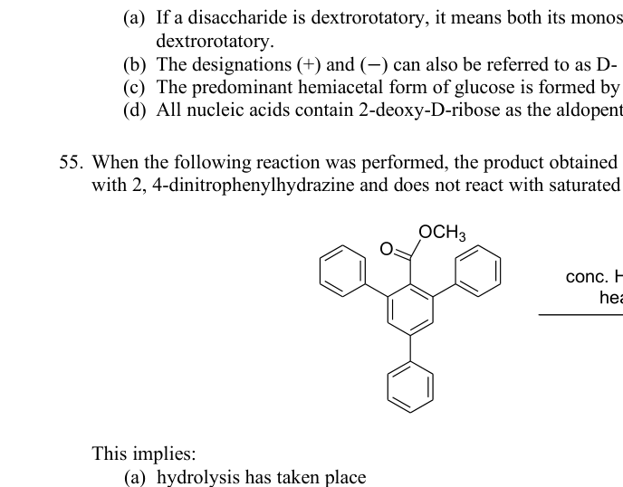
Reaction scheme for acid-catalyzed cyclizationTopic: Modern-Quantum Physics Metodi: Physical Modeling Competenze: Physical Reasoning, Diagrammatic Reasoning Fonte: Testo (PDF) — p.13
Problema 56
The following reaction was performed.
However, on investigation it was discovered that there were additional product(s) in the reaction mixture. The additional product(s) is/are
(A) product (a) (B) product (b) — a vicinal dibromide (C) product (c) (D) product (d) — a geminal dibromide
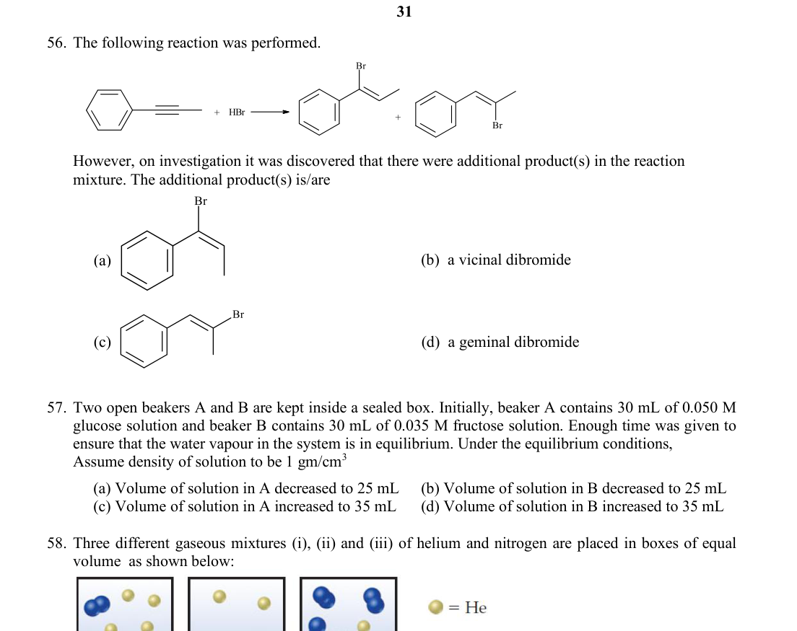
HBr addition reaction and additional productsTopic: Modern-Quantum Physics Metodi: Physical Modeling Competenze: Physical Reasoning, Diagrammatic Reasoning Fonte: Testo (PDF) — p.14
Problema 57
Two open beakers A and B are kept inside a sealed box. Initially, beaker A contains 30 mL of 0.050 M glucose solution and beaker B contains 30 mL of 0.035 M fructose solution. Enough time was given to ensure that the water vapour in the system is in equilibrium. Under the equilibrium conditions,
Assume density of solution to be
(A) Volume of solution in A decreased to 25 mL (B) Volume of solution in B decreased to 25 mL (C) Volume of solution in A increased to 35 mL (D) Volume of solution in B increased to 35 mL
Topic: Thermodynamics, Fluid Mechanics Metodi: Physical Modeling, Hydrostatic Equilibrium Competenze: Physical Reasoning, Mathematical Modeling Fonte: Testo (PDF) — p.14
Problema 58
Three different gaseous mixtures (i), (ii) and (iii) of helium and nitrogen are placed in boxes of equal volume as shown below:
The true statement(s) from the following is/are
(A) Box (ii) has the lowest pressure (B) Box (ii) has the lowest partial pressure of helium (C) Box (ii) has the lowest density (D) Pressure of box (iii) is less than pressure of box (i)
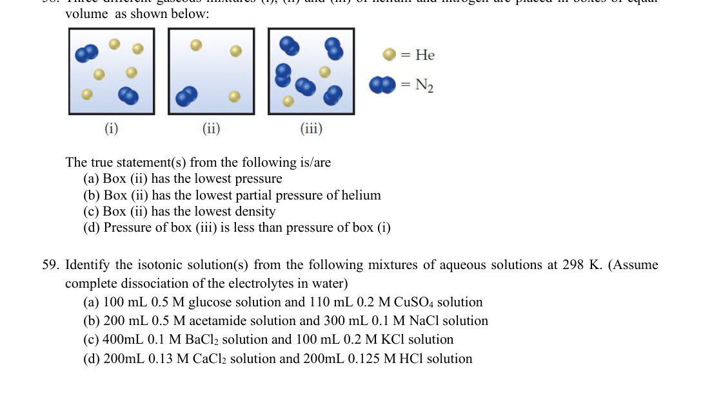
Three boxes with He-N2 gas mixturesTopic: Kinetic Theory, Thermodynamics Metodi: Ideal Gas Law, Kinetic Theory of Gases Competenze: Physical Reasoning, Mathematical Modeling Fonte: Testo (PDF) — p.14
Problema 59
Identify the isotonic solution(s) from the following mixtures of aqueous solutions at 298 K. (Assume complete dissociation of the electrolytes in water)
(A) 100 mL 0.5 M glucose solution and 110 mL 0.2 M solution (B) 200 mL 0.5 M acetamide solution and 300 mL 0.1 M NaCl solution (C) 400 mL 0.1 M solution and 100 mL 0.2 M KCl solution (D) 200 mL 0.13 M solution and 200 mL 0.125 M HCl solution
Topic: Thermodynamics, Fluid Mechanics Metodi: Physical Modeling, Ideal Gas Law Competenze: Mathematical Modeling, Physical Reasoning Fonte: Testo (PDF) — p.14
Problema 60
Three cylinders connected with valves are shown in the diagram. All the cylinders are at same temperature. Which of the following statement(s) is/are true once the valves are opened and the system is allowed to reach equilibrium?
NOTE: Volume of connecting tubes may be neglected.
(A) Total pressure of the system will be 1.75 atm (B) The partial pressure of Ne in cylinder 1 will be higher than that in cylinder 2 and 3 (C) The correct order of partial pressures will be (D) Number of moles of gas in cylinder 2 will be lower than its initial value.
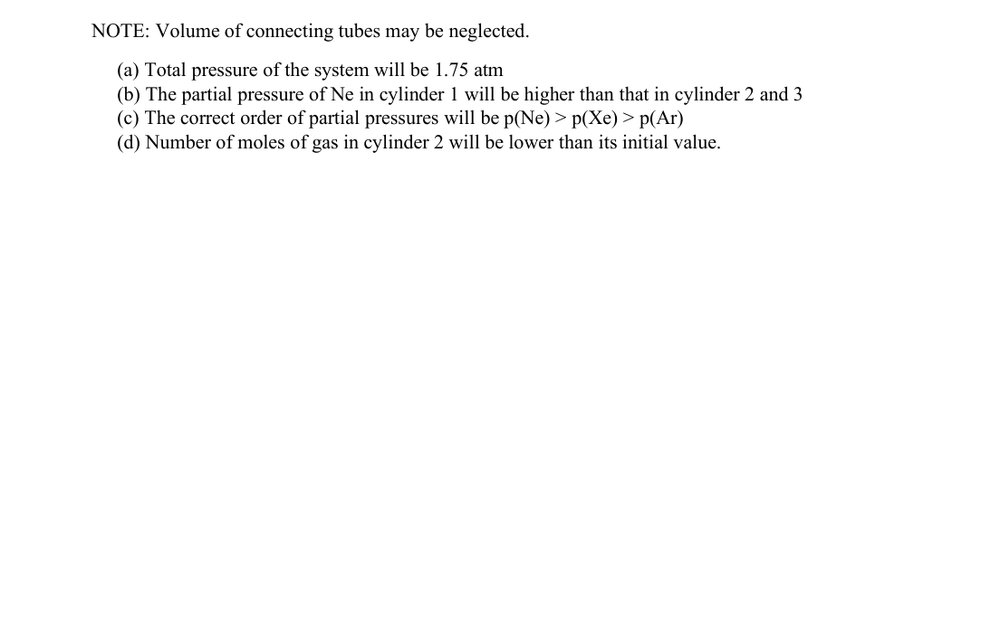
Three connected cylinders with noble gas mixturesTopic: Kinetic Theory, Thermodynamics Metodi: Ideal Gas Law, Physical Modeling Competenze: Mathematical Modeling, Physical Reasoning Fonte: Testo (PDF) — p.15